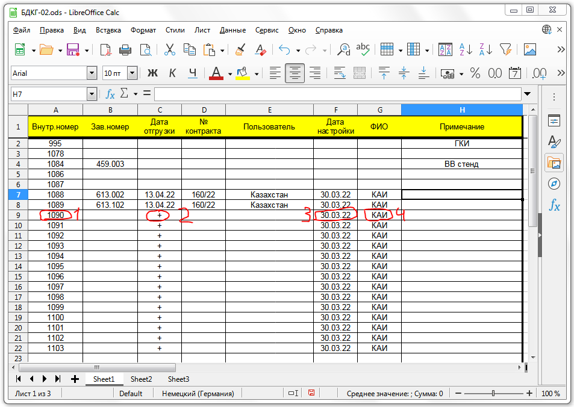
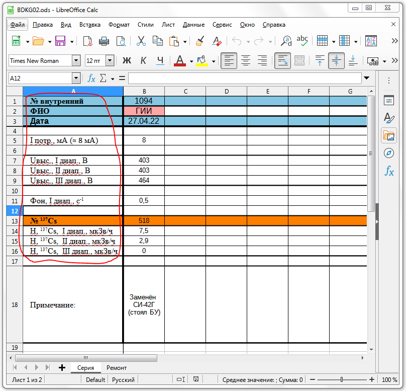
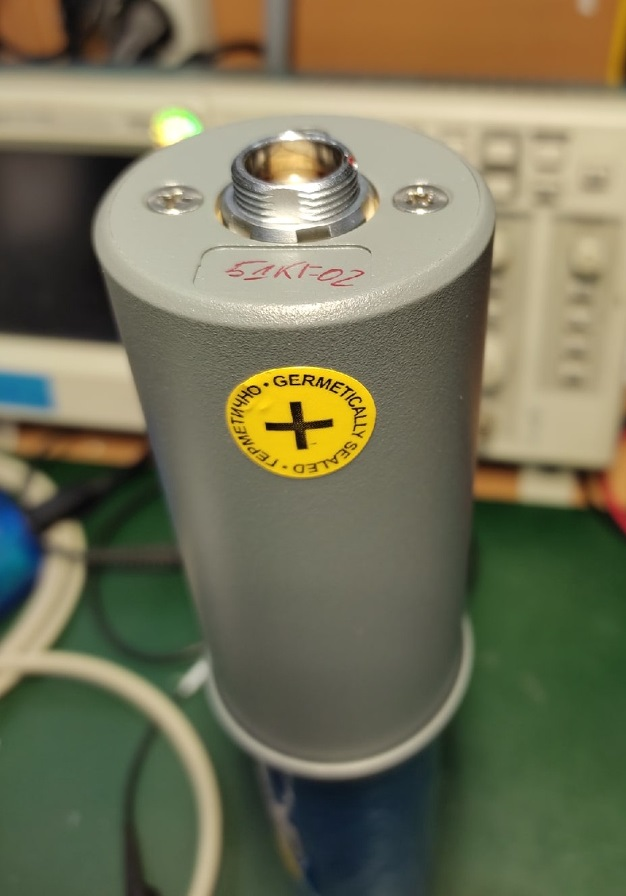

БДКГ-02
РЕМОНТ
Как поменять напряжение 100 → 200 вольт
Как сделать калибровку по фону и снять градуировочное число
Расчет протокола поверки
Журнал градуировки БДКГ-02
Как поменять напряжение 100 → 200 вольт
Как сделать калибровку по фону и снять градуировочное число
Расчет протокола поверки
Журнал градуировки БДКГ-02
- Приклеить наклейку с номером на угол процессорной платы
- Приклеить на прибор стикер с указанием номера прибора и его адресом (например: 958/15, где 958 — номер прибора, 15 — адрес)
Клеить наклейку с номером на корпусе лучше с противоположной стороны от наклейки на
контроллере, тогда как бы БД не лежал на столе, всегда будет виден его номер
- В электронный перечень записать внутренний номер (1), поставить "+" в графе "Дата отгрузки" (2), дату настройки (3) и ФИО (4) 
- Заполнить базу настройки в соответствии с требуемыми параметрами: 
- Подключение блока детектирования к компьютеру производится с помощью адаптера USB-COMi-Si-M и кабеля с дополнительными контактами питания
- Работа с БДКГ-02 осуществляется с помощью программы SARKtech.

-
Если БД не подключается
- проверить уровень высокого напряжения на плате усилителя: если напряжение ≈ 5V, следует дождаться (может занять 2 минуты), когда напряжение подымется на нормальный рабочий уровень, сразу же присвоить необходимый адрес
- А ещё в БД может быть записан 0-й адрес, поэтому SARKtech такой блок и не видит. Чтобы подключить такой блок, нужно зашить любой другой адрес (от 1 до 16)
- Присвоить адрес (от 1 до 16. Адреса у БД по возможности должны быть разными)
- Перейти на вкладку "Управление"
- Используя функцию «Ид. Данные (Запись)» присваиваем каждому прибору свой номер. Проверяем правильность внесенных изменений нажав «Ид. Данные (Чтение)»
- Используя функцию «Время Инт. (Чтение)» проверяем значение времени (норма — 255)
- Используя функцию «Пороги (запись)» устанавливаем рабочий порог - 500, аварийный порог - 1000
- Проконтролировать сработку рабочего и аварийного порога
- Используя функцию «Коэф. (Запись)» изменяем значение третьего коэффициента ("собственный фон") первого диапазона (с 1.6599 на 0.6599). Проверяем правильность внесенных изменений нажав «Коэф. (Чтение)»

Паролем служит текущее системное время без ":". Например: если текущее время "11:45", то паролем будет "1145"

Обязательно после контроля прочитать записанные пороги и удостовериться в соответствии их с заданными.
- Проконтролировать ток потребления ≈ 8 мА.
Ток можно измерить по напряжению на 10 Ом
резисторе (должно быть 10*8 = 80mV)
- В программе переходим на вкладку «Монитор» . Вольтметром на пределе 1000В проверить уровень высокого напряжения на плате усилителя в трех диапазонах (~400В, ~400V, ~460). Переключение диапазонов осуществляется в нижней части окна программы. Полученные значения записать в перечень.
- Проконтролировать показания на фоне ≈ 0,3-0,7 с-1
- Поднести источник гамма-излучения 137Cs активностью 105 Бк. Записать в перечень данные в трех иапазонах (Значения из колонки «Мощн. Дозы / Пл. Потока»). Перед началом измерений нажать «Сброс»
- Отдать БД на сборку стаканов
- Отдать собранные БД на линейку


После линейки:
- Проверить контрольные точки в журнале градуировки БДКГ-02
- Если БД не прошел по точкам или по коэффициенту/мертвому времени, можно попробовать изменить напряжение
- Записать в журнал градуировки значения мертвого времени и коэффициент в 3-ем диапазоне
- В 3-м диапазоне данные должны соответствовать:
- Блоки с хорошими данными поставить на калибровку фона
- Снять градуировочное число (Как сделать калибровку по фону и снять градуировочное число)
- Проверить БД на герметичность. После успешного прохождения наклеить круглую наклейку "ГЕРМЕТИЧНО GERMETICALLY SEALED +" сбоку корпуса напротив места для наклейки" 
- Подготовить БД к работе в СРК
- Готово
Коэффициент > 1300
Мертвое время < 1350e-7
Мертвое время < 1350e-7